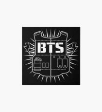
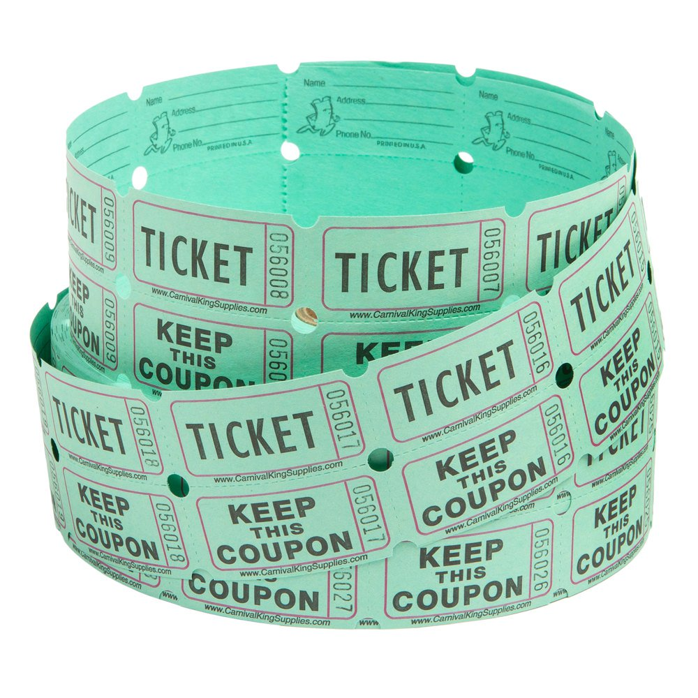
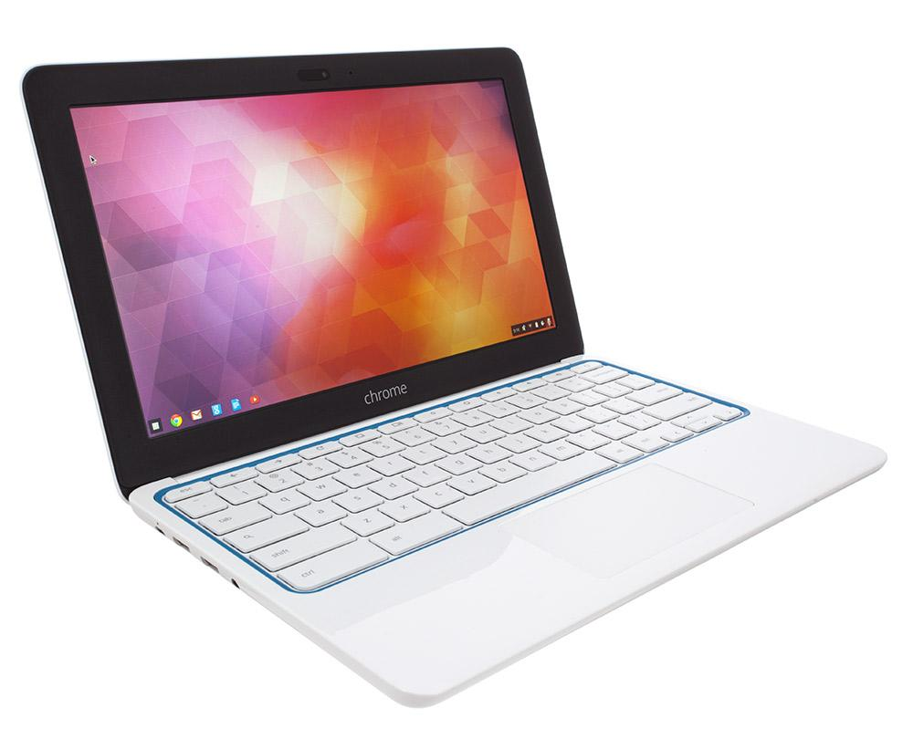

Hello, welcome to our website:) !!Im Lilliana and I go to Brentwood
STEAM school of Inevations and im going into the sixth grade ,Ii love
the male kpop group called Bts . Hi my name is Maribel and I go to
Olmos next Im ganna be in sixth grad I love playing online vidoe games
with my friends.The first day we got here we were all nervouse and
everyone didn't know each other but the teachers introdused us to each
other. We also had a game to find out who knows best about their
partner , the person who knew there partner the best got tickets. the
tickets were put in at box and at the end of the week two people will
be drawn from a box to get a Crome Book . Girls that dont get the
computers will get other prizzes but its not really all about getting
prizzes its about helping each other and learning how to code.
The first day we got here we were all nervouse and
everyone didn't know each other but the teachers introdused us to each
other. We also had a game to find out who knows best about their
partner , the person who knew there partner the best got tickets. the
tickets were put in at box and at the end of the week two people will
be drawn from a box to get a Crome Book . Girls that dont get the
computers will get other prizzes but its not really all about getting
prizzes its about helping each other and learning how to code.
 
The
projects
Our first project was
an animation about polution in the ocean there was many fish going
around is cericles going crazy because of the stuff that people throw
in the ocean.
The secound procject we did was about creating a robot that can stop
when the light touches red and we also had a race after completing all
of are question the race was so much fun but our team didn't win but
its ok because it not all about winning its about having fun and
learning.The thing
that i thought was the hardest was building the robot because we had to
change up some things because the first time we messed up but we found
a way to fix it.
The third project we did was making an educational video game for littel kids so they can learn things from our game . The